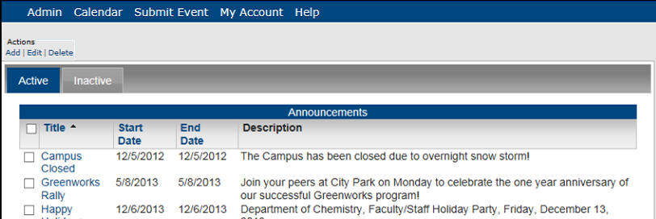
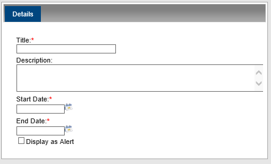
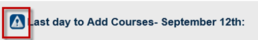
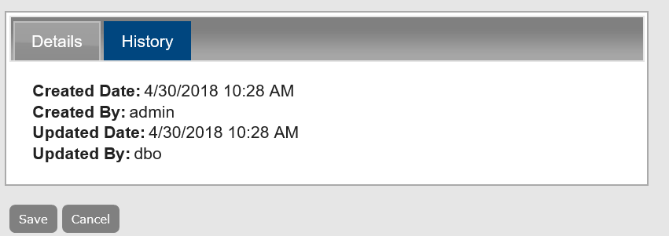
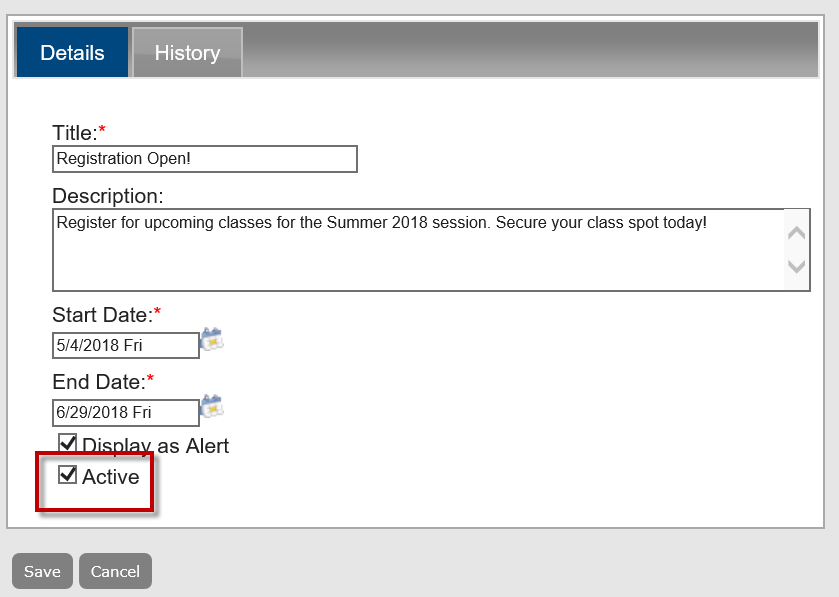

An announcement in Master Calendar is a message that displays prominently across the top of the Master Calendar default page, the top of the Master Calendar Home page, and the top of the page when viewing calendars in Master Calendar. You might want to use an announcement to call special attention to an event or events on the calendar. For example, if you are managing calendars for a university campus, and one of the calenders is used for invited speaker events, you might want to have an announcement at the top of the launch page that emphasizes when a particularly prominent speaker will be on campus. Depending on the parameters that you have set in Master Calendar, an announcement can either be static or scrolling across the top of the launch page.
See Also: Customize Your Master Calendar Site.
This topic guides you in creating new announcements, viewing announcement history, and editing, deleting, and activating and de-activating announcements.
From the Admin Panel, navigate to Admin > Events & Special Dates > Announcements. The Announcements page opens on the Active tab, which lists all currently active announcements in Master Calendar.

Under Actions, click Add. A blank Details tab opens. Add the information for the new announcement.

Add the information for the announcement.
Details Tab Fields
| FIELD | DESCRIPTION |
|---|---|
|
Title |
The title or name of the announcement. |
|
Description |
A description of the event. |
|
Start Date/End Date |
The first date that you want the announcement to be displayed at the top of the Master Calendar launch page and the last date that you want the announcement to be displayed at the top of the Master Calendar launch page. |
|
Display as Alert |
Checking the Display as Alert box adds a caution symbol to the front of the announcement text.  Announcement Text Displayed as Alert |
To view history, click the History tab. Click the Details tab to return to editing the announcement.

To activate/de-activate announcements, use the Active checkbox. This controls whether the item is listed on the Active tab.

To delete an announcement, select the item (you can select all items on a page by clicking Title) and click Actions > Delete. A message prompts you to confirm that you want to delete all the selected announcements.